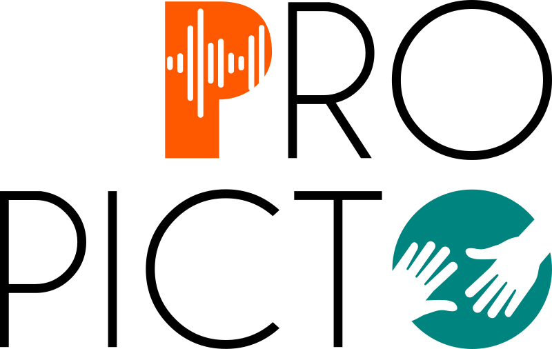

<div class="container-fluid" xmlns="http://www.w3.org/1999/html">
  <div class="card">
    <!--Header-->
    <div class="card-header text-center bg-info text-white">
      <h1>Post-édition de phrases traduites en pictogrammes ARASAAC</h1>
    </div>
    <!--Body-->
    <div class="card-body">
      <h2 class="text-left">Instructions</h2>
      <p class="text-justify">
        Un total de {{num_sentences}} phrases vous sont présentées. La barre en haut à droite permet de visualiser votre progression.
        En dessous de la phrase présentée, sa traduction en pictogrammes ARASAAC.
        Vous pouvez changer la position d'un pictogramme en le sélectionnant avec la souris.
        Vous pouvez également supprimer un pictogramme en cliquant dessus. Il sera alors entouré d'une bordure grise et un bouton "Supprimer" apparaitra.
        Enfin, il est possible d'ajouter un pictogramme.
        Pour cela, renseignez un mot dans la barre de recherche. Il suffit ensuite de sélectionner le pictogramme voulut puis l'ajouter en cliquant sur le bouton "Ajouter".
        Si aucun pictogramme n'est disponible, un message d'erreur s'affichera.
        Chaque phrase est présentée une par une. Pour passer à la suivante, cliquez sur "Valider la traduction".
        Il est possible de quitter la tâche à tout moment, en cliquant sur le bouton "Quitter".
      </p>
      <br/>
      <div *ngFor="let s of sentences; let index = index">
        <div class="shadow-lg p-4 mb-5 bg-white rounded" [hidden]="pictosVisibility[index]">
          <div class="container-fluid">
            <div class="row">
              <div class="col-7">
                <h1 class="display-4">{{index + 1}} - {{s.sentence}}</h1>
              </div>
              <div class="col">
                <div class="progress">
                  <div class="progress-bar" role="progressbar" [style]="progress_bar_style" aria-valuenow="25" aria-valuemin="0" aria-valuemax="100">{{set_progress_bar(id_sentence)}}%</div>
                </div>
              </div>
            </div>
          </div>
          <br />
          <div cdkDropList cdkDropListOrientation="horizontal" class="example-list" (cdkDropListDropped)="drop($event)">
            <div class="example-box" *ngFor="let sentence of pictos;let index = index" cdkDrag>
              
            </div>
          </div>
          <br />
          <button *ngIf="double_click" [disabled]="clicked" (click)="deletePicto(); clicked=true" class="btn btn-warning float-left">Supprimer</button>
          <button class="btn btn-dark float-right ml-1" type="submit"
                  (click)="quitStudy(index, s.sentence)"> Quitter </button>
          <button class="btn btn-success float-right" type="submit"
                  (click)="goToNextTask(index, s.sentence, s.pictos)"> Valider la traduction </button>
          <br/><br/><br/>
          <h2 class="display-4">Rechercher un mot</h2>
          <form (ngSubmit)="onSubmit(formText)" #formText="ngForm">
            <div>
              <mat-form-field class="widthTextarea" appearance="fill">
                    <textarea matInput type="text" placeholder="{{'translatePicto.typeAWord' | translate}}"
                              id="sentence-input" name="text" ngModel required rows="2" (keyup.enter)="onSubmit(formText)"></textarea>
              </mat-form-field>
              <br>
              <button class="margin-right btn btn-primary" type="submit" [disabled]="formText.invalid"> {{'translatePicto.submit' | translate}} </button>
              <button type="button" class="margin-right btn btn-danger" (click)="erase()"> Effacer </button>
            </div>
            <br>
            <div *ngIf="loading"  class="text-center">
              <div class="spinner-border loader" role="status">
                <span class="visually-hidden">Loading...</span>
              </div>
            </div>
            <div *ngFor="let carousel of result;let index = index">
              <h2 class="middle">{{'translatePicto.SearchResult' | translate}} : "{{this.wordsText[index].text}}"</h2>
              <carousel *ngIf="carousel[0] !=='https://lig-interaactionpicto.imag.fr/api/p/arasaac/10056'"  [cellsToScroll]="2" [loop]="true" [arrowsOutside]="true" arrowsTheme="dark">
                <div class="carousel-cell" *ngFor="let image of displayResult[index]">
                  
                </div>
              </carousel>
              <button *ngIf="this.is_selected" class="btn btn-primary float-right" type="submit" [disabled]="clicked_add"
                      (click)="addPicto(); clicked_add=true"> Ajouter </button>
              <div class="middle" *ngIf="carousel[0] === 'https://lig-interaactionpicto.imag.fr/api/p/arasaac/10056'">
                Aucun pictogramme n'a été trouvé pour ce mot
              </div>
              <br>
            </div>
          </form>
        </div>
      </div>
    </div>
    <!--footer-->
    <div class="card-footer text-muted">
      <div class="row">
        <div class="col-sm">
          
        </div>
        <div class="col-sm">
        </div>
        <div class="col-sm float-end">
          
        </div>
      </div>
    </div>
  </div>
</div>


